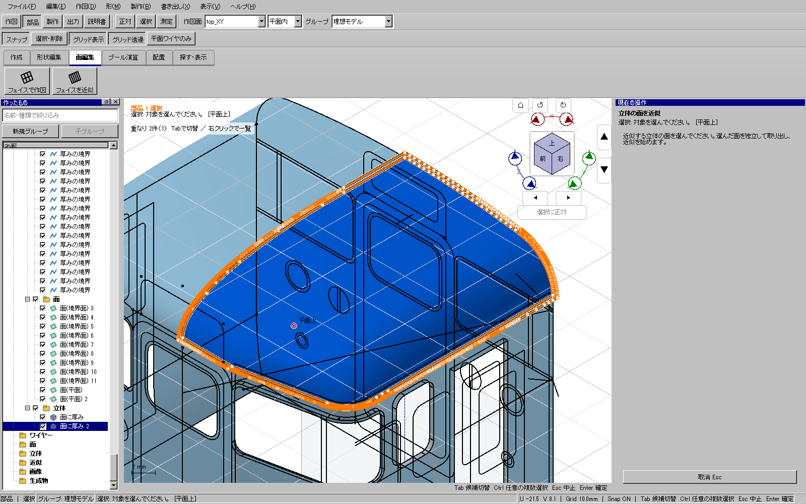
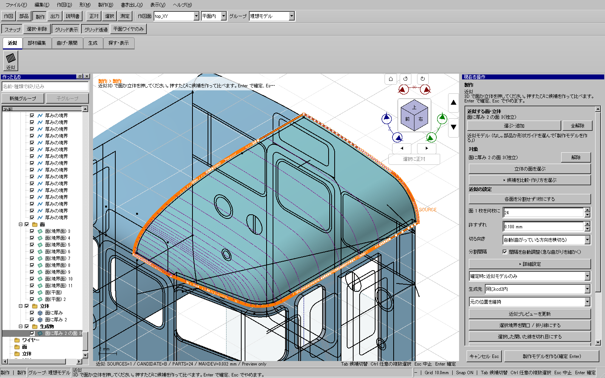

2026-11-12。検証中。全体・配布版の結果は確定後に追記します。
面を先に選んでから「近似」も使えます。Ctrlで複数の面を選べます。同じ立体の別面も別々に扱います。 左一覧の立体全体から、面を勝手に決めることはありません。特定の面は3Dビューで指定してください。
選んだ面は独立した面として取り出し、その面だけを近似します。元ソリッドと未選択の面は保持します。 独立した面は元ソリッドの後の編集には追従しません。輪郭や穴は元のネイティブ形状を使います。


平面・円筒曲面・穴2つの面、事前選択とツール先行、Ctrl追加、同一立体の複数面、独立面との混在、同じ面の再指定、取消・Esc・ツール切替、左一覧の全体指定の拒否を実マウス・キーで確認します。
新規UI14件と意味的キー／一時面番号のコア回帰を追加。元のソリッド、未選択面、輪郭・穴、UUID、保存形式を維持します。
添付由来の屋根の閉ソリッドから、3DビューのCtrl指定で見えている表面を取り出し、その独立面1つだけを近似しました。24枚・間隔自動調整で下見の最大偏差0.032 mm。確定・保存・実Ctrl+Z/Y・再読込とA4 1ページの型紙作成まで成功しました。元416定義は完全一致。生成直後の元13メッシュSHA256は全て一致。Redo後は1面の三角形順序と浮動小数点の差があり、対応する全三角形の最大頂点差は4.41836×10⁻¹² mmでした。デスクトップ原本のSHA256も維持しています。保存モデルを読み直して型紙を作り、UIから「いまの型紙」を選んでSVG・DXF・PDFへ出力しました。書き出しの別再試験は全工程成功です。途中の試験指定の失敗記録は保全しています。
Windowsの全体ゲートと配布ZIPの検証・通常起動の完了後に公開します。